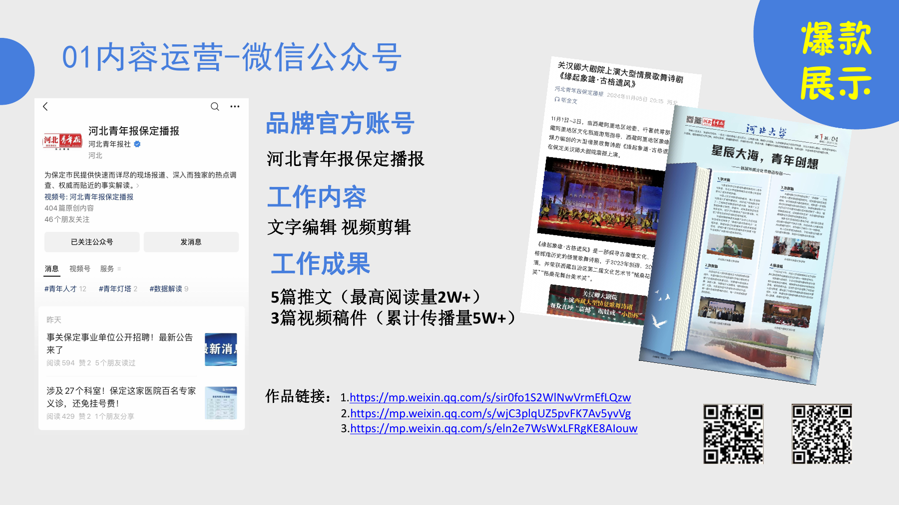
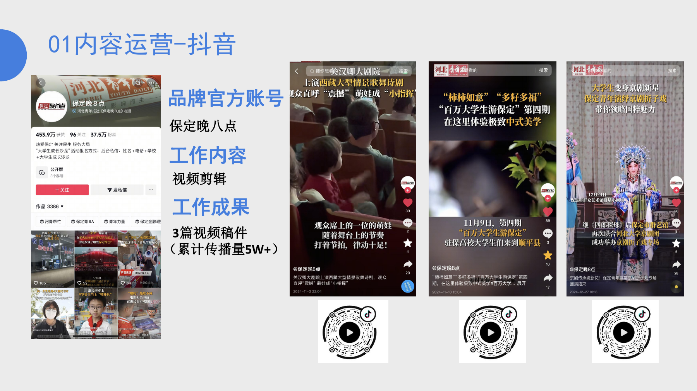
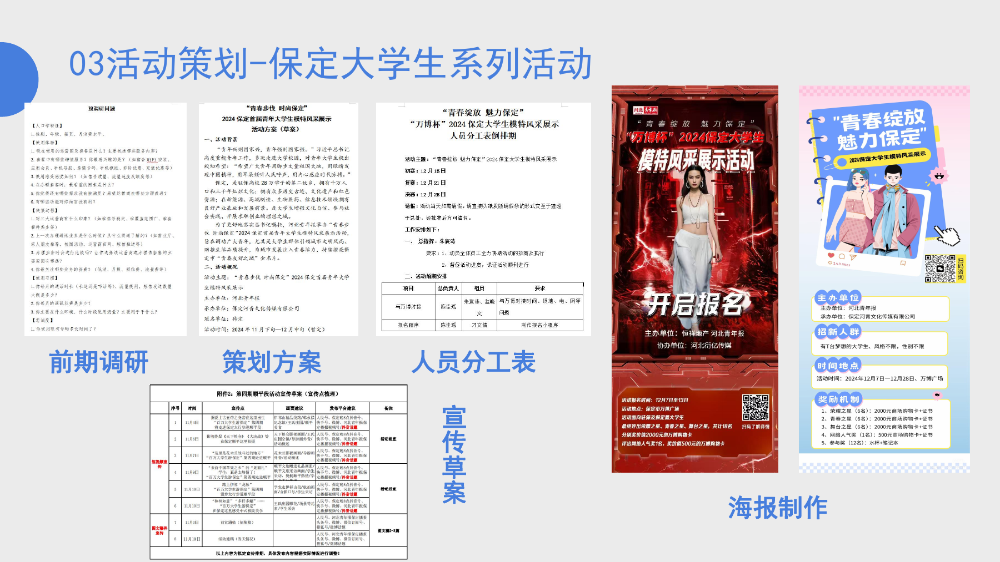
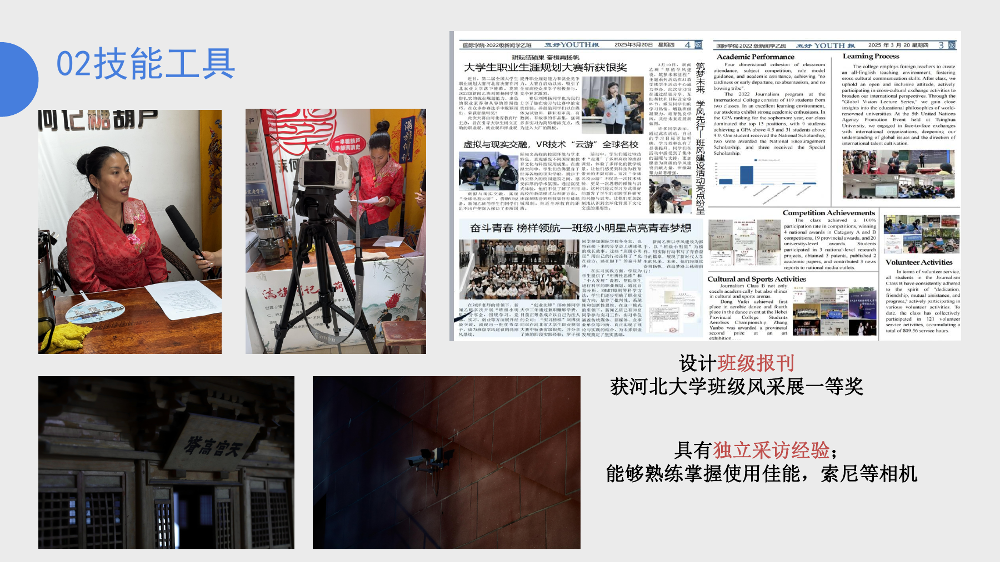

香港理工大学 · 硕士
翻译与语言技术
在香港这个多语言、多文化的现场，继续探索语言、传播与技术之间的新连接。
从漫画平台到内容机构，再到头部短视频平台，我关注的不只是“做了什么”，更是内容如何形成真实增长。
新闻学训练了我理解信息与受众；真实业务让我掌握内容生产、运营增长与品牌协作；港理工则把这条路径延伸到语言与技术。
在香港这个多语言、多文化的现场，继续探索语言、传播与技术之间的新连接。
内容策划、品类运营与大型活动执行。
漫画投放、机构协作、广告策略与数据分析。
媒体宣传、志愿服务与校园活动策划。
作品集里的真实项目缩略图，覆盖内容运营、短视频、活动策划与采访设计。

负责选题、文字编辑与视频剪辑；5篇推文最高阅读量2W+，3篇视频稿件累计传播5W+。
查看代表作品 ↗
围绕演出、城市与青年文化完成短视频剪辑，用移动端叙事呈现本地文化与青年视角。

从前期调研、方案撰写和人员分工，到宣传节奏与海报制作，让创意从提案走向现场执行。

具备独立采访与相机拍摄经验；参与班级报刊设计并获河北大学班级风采展一等奖。
它们来自一次次发布、复盘、改稿与现场执行，也是我带进港理工课堂的工作方法。
好的内容不是把声音放大，而是先听懂人真正关心什么。
用 A/B 测试、用户画像与行为数据，让判断更清晰，让灵感更可靠。
从创作者、平台到线下场景，让不同角色在同一目标下形成合力。
从新闻到语言技术，变化的不是热爱表达，而是理解世界的工具越来越多。